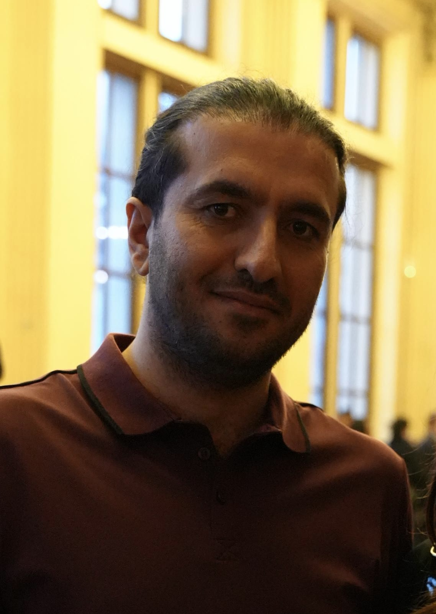

Linguist
My research is centered around synchronic study of Iranian languages and language documentation in the Kurdish region. My work touches many areas, including language documentation, language contact, corpus-based linguistics, and morphology.